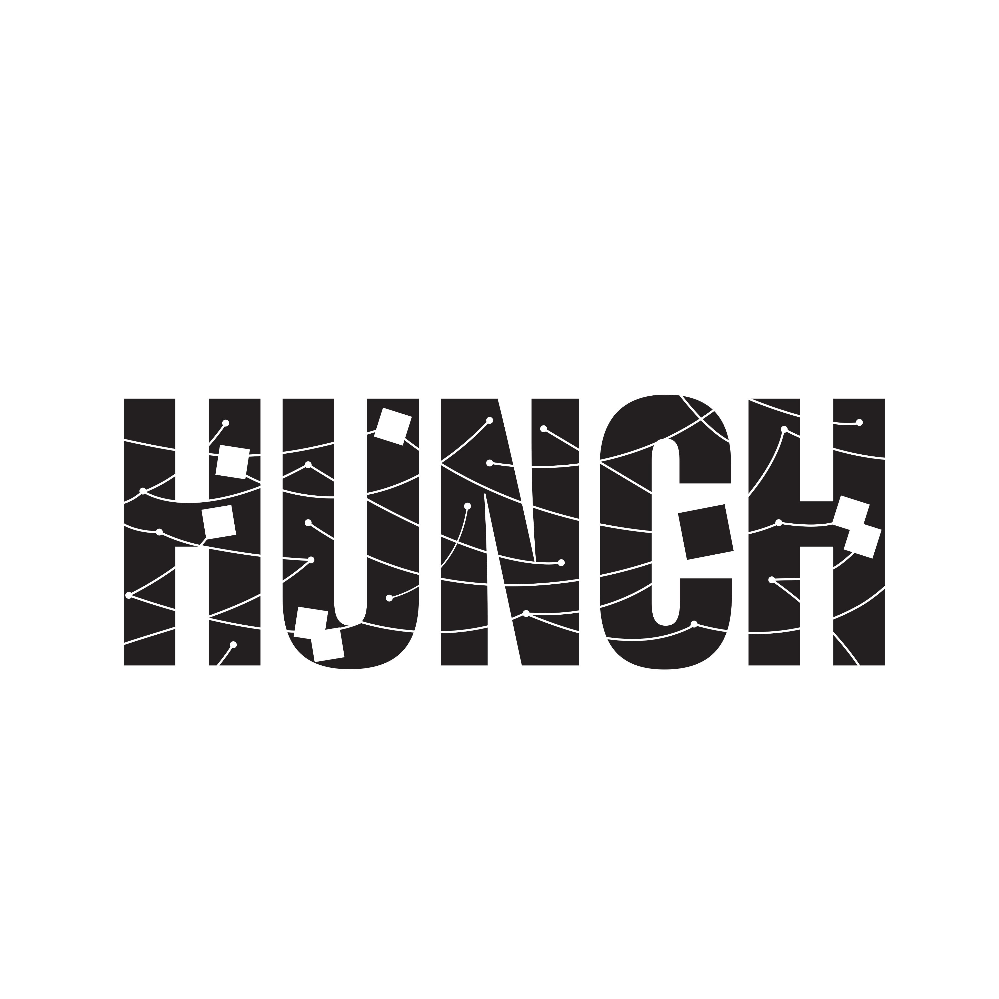

HUNCH – Typographic Interpretation
Concept
Using the word HUNCH, this piece visualizes the fragmented, instinctual thinking that drives intuition and deductive reasoning.
Design Approach
Inspired by detective logic boards, I scattered clues across a grid, connecting them with lines and forming visual tension. The slab serif font and structured base ground the chaotic spread of evidence.
Sketches

Result
The final design evokes psychological deduction, with each letter acting as part of a larger mental map—turning typography into a visual metaphor for internal realization.